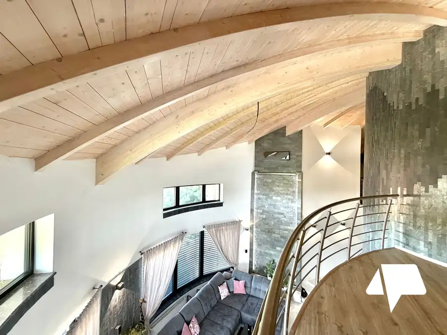
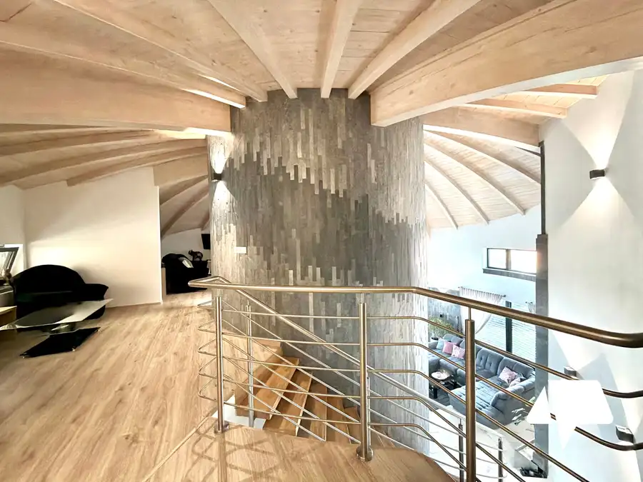
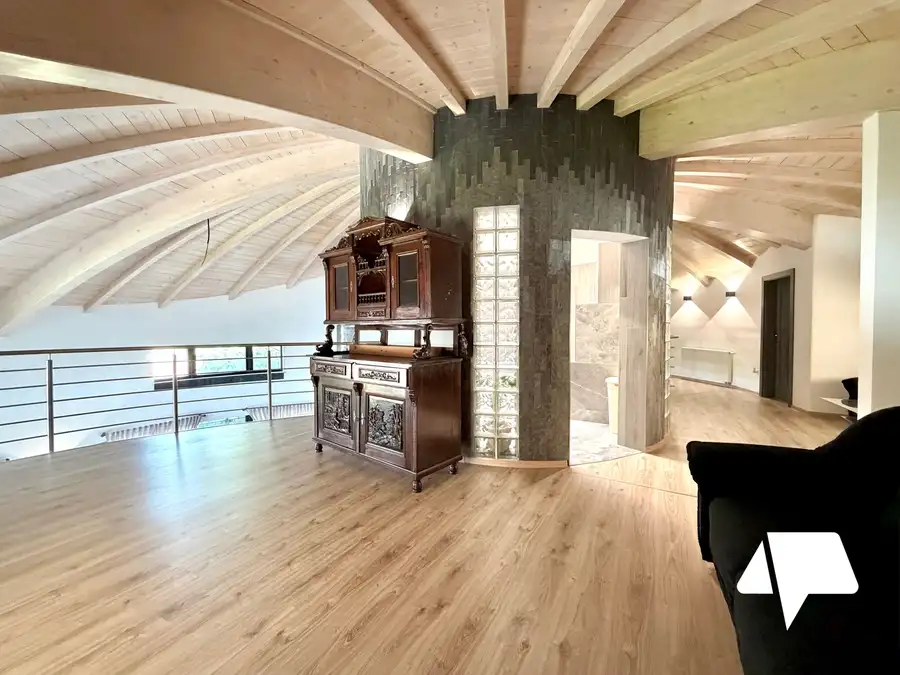
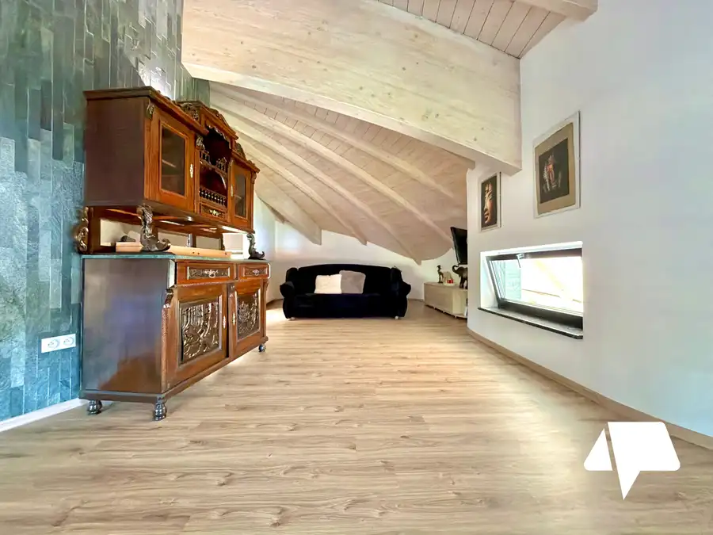
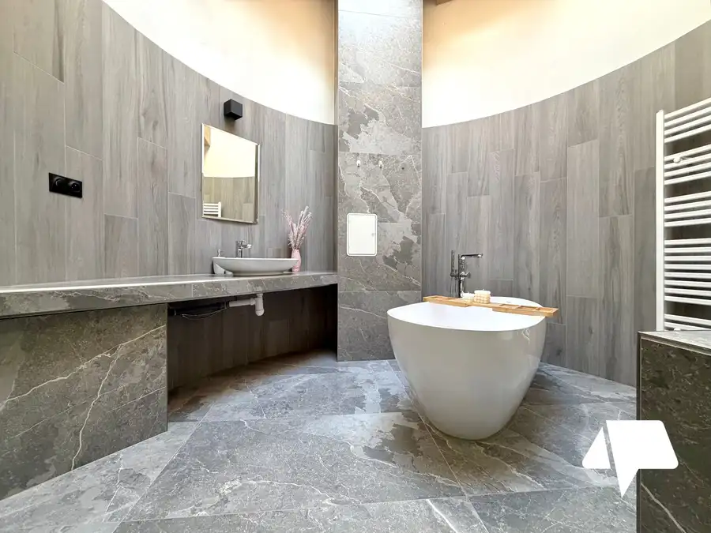
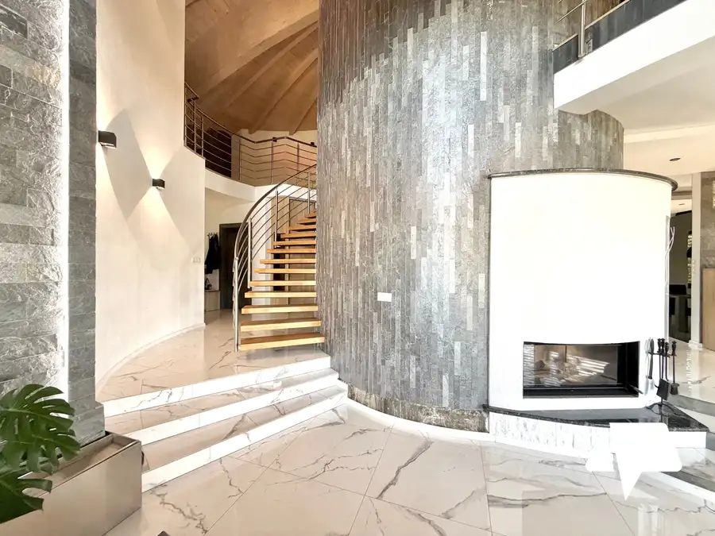
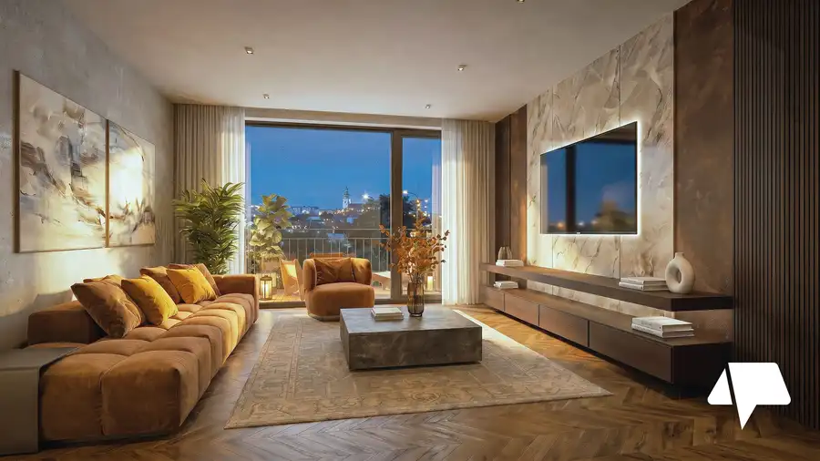
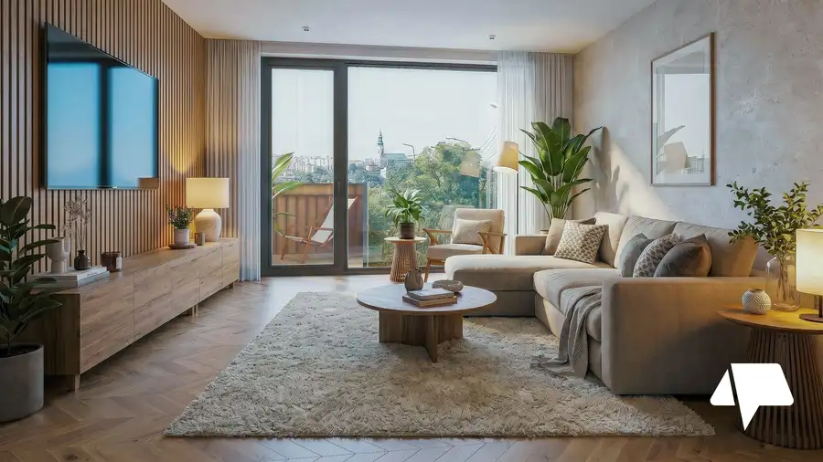
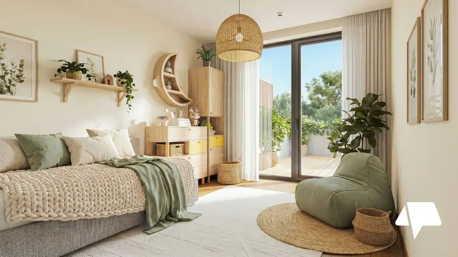

Predaj, Rodinný dom | AUTORSKÁ ARCHITEKTÚRA | 333 m² | POZEMOK 1 534 m², Martin nad Žitavou
Martin nad Žitavou






- Plocha333.1 m²
- StavNovostavba
- VlastníctvoOsobné
- Energetická triedaA
O nehnuteľnosti
AUTORSKÁ ARCHITEKTÚRA | 333,10 m² | POZEMOK 1 534 m² | KOLAUDÁCIA 2019Dom, ktorý nevznikol podľa katalógu. Vznikol ako originál.Niektoré nehnuteľnosti zaujmú veľkosťou. Iné lokalitou alebo pozemkom. A potom sú domy, pri ktorých si ako prvé všimnete, že prinášajú originálnu architektúru.V Martine nad Žitavou ponúkame na predaj dom s nezameniteľným autorským rukopisom s úžitkovou plochou 333 m², situovaný na veľkorysom pozemku s výmerou 1 534 m². Nie je to typová stavba, tento dom pracuje s priestorom úplne inak. Dom bol navrhnutý a vybudovaný pôvodným majiteľom pre vlastné bývanie. Nevznikal ako univerzálny projekt určený na ďalší predaj. Jeho architektúra preto nesie nezameniteľný architektonický charakter a riešenia, ktoré pri bežnej rezidenčnej výstavbe jednoducho nenájdete.ARCHITEKTÚRA A PRIESTOR• Oblé línie & galéria: Menia perspektívu a otvárajú interiér do výšky.• Centrálne schodisko & svetlík: Prepája jednotlivé úrovne a privádza prirodzené svetlo priamo do centra domu.• Oblúková strešná konštrukcia: Dominantná drevená strecha formuje charakter nehnuteľnosti a prirodzene prechádza do krytých exteriérových priestorov. Strecha tu nie je len technickým zakončením, ale hlavným architektonickým prvkom.DISPOZÍCIA (Tri funkčné úrovne)Priestor nevzniká iba veľkosťou miestností, ale vytvárajú ho výšky, priehľady a prepojenie podlaží. 333 m² tak nepôsobí ako súčet izieb, ale ako jeden premyslený celok.Podzemné podlažie (vhodné aj ako samostatný byt či firemné zázemie):• Praktické technické a skladové zázemie• Samostatný vstup zvonka1. Nadzemné podlažie:• Kuchyňa s jedálňou a obývacia izba• 2 samostatné izby• Kúpeľňa a samostatné WC• Technické zázemie a schodiskoObytné podkrovie:• Izba a šatník• Kúpeľňa a chodba• Otvorená galériaTECHNICKÉ RIEŠENIE A ZHRNUTIEVýrazná architektúra tu nestojí na úkor technického riešenia. Dom bol skolaudovaný v roku 2019 a je vo veľmi dobrom technickom stave.• Konštrukcia: Keramické tvárnice Porotherm Profi 40 (kvalitné nosné konštrukcie, hydroizolácia a tepelná izolácia).• Vykurovanie & Komfort: Teplovodné podlahové vykurovanie, plynový kotol, zásobník TÚV + hypokaustový krb s vykurovacou vložkou.• Okná & Tienenie: Plastové okná s vonkajším hliníkovým tienením (vonkajšie žalúzie)• Siete: Napojenie na elektrinu, zemný plyn, verejný vodovod a verejnú kanalizáciu.• Energetická trieda: A1 (v ukazovateli primárnej energie).POZEMOK 1 534 m²Veľkorysý pozemok poskytuje dostatok priestoru pre záhradu, oddych aj ďalšie využitie. Výrazné presahy strešnej konštrukcie vytvárajú kryté exteriérové plochy a prirodzene prepájajú interiér so záhradou. Práve vďaka rozlohe pozemku môže jedinečná silueta domu naplno vyniknúť. K dispozícii je aj dostatok priestoru pre parkovanie.DOM PRE KLIENTA, KTORÝ NEHĽADÁ ŠTANDARDPôdorys vysvetlí dispozíciu a fotografie ukážu tvar. Ani jedno však neprenesie pocit z pohľadu z galérie alebo prirodzené svetlo z centrálneho svetlíka. Architektúra tohto domu funguje najlepšie vo chvíli, keď sa v nej nachádzate a postupne odhaľujete výnimočné a jedinečné časti domu.Uvedená cena je vrátane provízie realitnej kancelárie. Zabezpečíme vám kompletný právny a poradenský servis. Naši odborníci v Nitrianskej realitnej kancelárii vám pomôžu aj s finančným poradenstvom a vybavením hypotekárneho úveru.Vypočítajte si výšku mesačnej splátky hypotéky na našej kalkulačke tu: https://profibroker.sk/hypoteka/Architektúru tohto formátu treba vidieť naživo. Rada vám poskytnem podrobnosti a dohodneme si individuálny termín obhliadky, aby ste si priestor a jeho jedinečnú atmosféru mohli vychutnať osobne.Mgr. Reichel Beáta, RSc.0905 440 705reichel@nitrianskereality.com
Parametre
- Doprava
- Diaľnica, Cesta
- Druh
- Rodinný dom
- Druh domu
- Rodinná vila
- Dátum zverejnenia
- 06. 10. 2026
- Energetický certifikát budovy
- A
- Plocha pozemku
- 1534 m²
- Počet izieb / miestností
- 6
- Počet nadzemných podlaží
- 2
- Počet podzemných podlaží
- 1
- Prístupová komunikácia
- Asfaltová
- Rok kolaudácie
- 2019
- Rok výstavby
- 2018
- Stav nehnuteľnosti
- Novostavba
- Telekomunikácie
- Internet
- Terén pozemku
- Iný
- Typ
- Predaj
- Typ konštrukcie
- Tehlová
- Vlastníctvo
- Osobné
- Vybavenie
- Terasa, Špajza, Technická miestnosť, Záhrada, Krb, Pivnica, Vonkajšie parkovacie miesto, Vyhradené parkovanie
- Vykurovanie
- Podlahové, Krb, Klimatizacia
- Zastavaná plocha
- 432 m²
- Zdroj tepla
- Zemný plyn
- Úžitková plocha
- 333.1 m²
Kde to je


Mohlo by Vás zaujímať

BytNové 247 502 €Predaj, 3 izbový byt s balkónom – JELENECKÁ DvA, Nitra-Zobor Nitra 3-izbový62.37 m²2. podlažie
BytNové 216 636 €Predaj, 2 izbový byt na 3 NP s balkónom - JELENECKÁ DvA, Nitra-Zobor Nitra 2-izbový47.43 m²3. podlažie
BytNové 269 158 €Predaj, 3 izbový byt s veľkorysou terasou - JELENECKÁ DvA, Nitra-Zobor Nitra 3-izbový70.28 m²1. podlažie